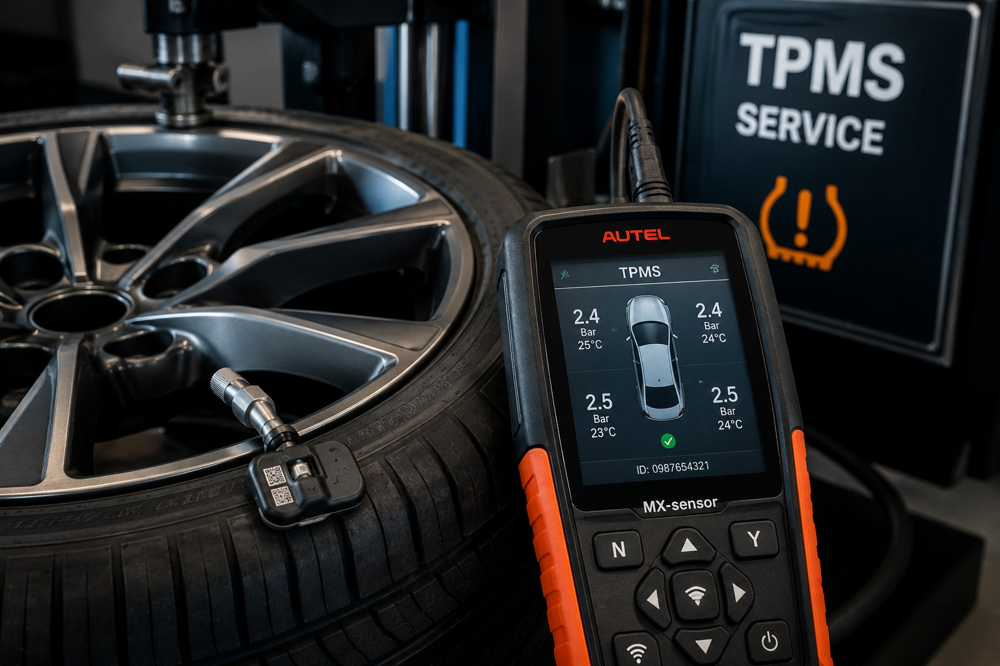

AG Auto-Tech provides professional TPMS sensor programming and replacement for customers in Basingstoke and surrounding areas. Whether your tyre pressure warning light is illuminated or your vehicle requires new sensor coding after wheel replacement, our technicians can diagnose and resolve TPMS faults quickly and efficiently.
A faulty TPMS system can leave you without accurate tyre pressure warnings. This may increase the risk of driving on underinflated tyres, uneven tyre wear, poor fuel economy and dashboard warning lights staying active.
We can diagnose, supply, code and configure replacement tyre pressure sensors for most modern vehicles. This service is ideal after sensor failure, wheel changes, tyre work or dashboard TPMS warnings.
Send your request directly to AG Auto-Tech Tadley on WhatsApp. We will receive the selected service and your vehicle details.